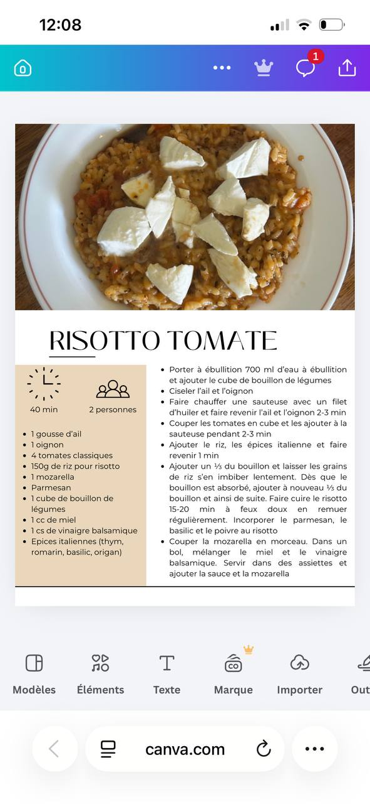

← Recettes
Risotto Tomate
🇮🇹 Italien
🧀 Végétarien
⏱️ 40 min
👥 2 pers.
🍽️ Plat
Ingrédients
- 1 gousse d'ail
- 1 oignon
- 4 tomates classiques
- 150 g de riz pour risotto
- 1 mozzarella
- Parmesan
- 1 cube de bouillon de légumes
- 1 cuillère à café de miel
- 1 cuillère à soupe de vinaigre balsamique
- Épices italiennes (thym, romarin, basilic, origan)
Préparation
-
1Porter à ébullition 700 ml d'eau et ajouter le cube de bouillon de légumes
-
2Ciseler l'ail et l'oignon. Faire chauffer une sauteuse avec un filet d'huile et faire revenir l'ail et l'oignon 2-3 min
-
3Couper les tomates en cube et les ajouter à la sauteuse pendant 2-3 min
-
4Ajouter le riz, les épices italiennes et faire revenir 1 min
-
5Ajouter un ⅓ du bouillon et laisser les grains de riz s'en imbiber lentement. Dès que le bouillon est absorbé, ajouter à nouveau ⅓ du bouillon et ainsi de suite. Faire cuire le risotto 15-20 min à feu doux en remuant régulièrement. Incorporer le parmesan, le basilic et le poivre au risotto
-
6Couper la mozzarella en morceaux. Dans un bol, mélanger le miel et le vinaigre balsamique. Servir dans des assiettes et ajouter la sauce et la mozzarella
